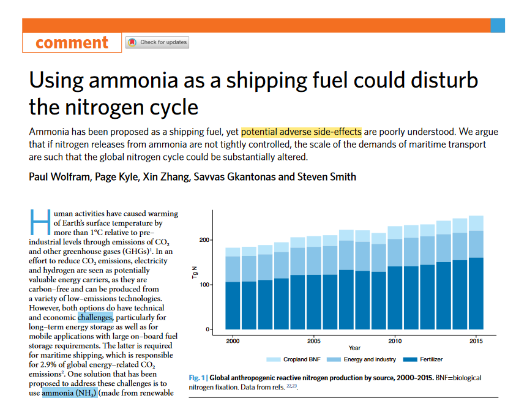
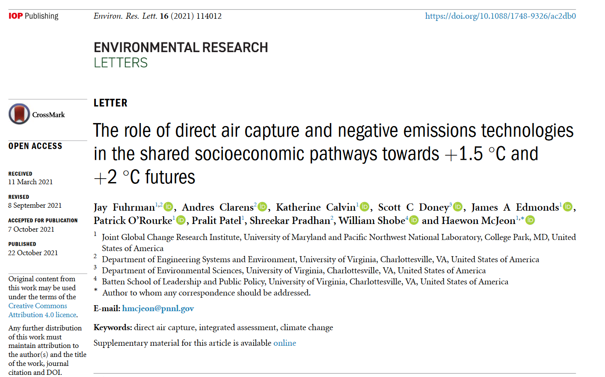

1 Week 1.
Introduction to Integrated Modeling and Assessment: what are the “big issues” in this field, what are IA models, why are IA research and models valuable for understanding integrated systems, and what IA models do (and what they don’t).
1.1 Carbon Brief Explainers : How IAMs are used to study climate change
There is a group of simple IAMs that can compare the costs and benefits of avoiding different levels of warming. Typically, these are run in a spreadsheet using highly simplified equations. They do not model the detailed processes and relationships of the economy, energy and Earth systems.These simple IAMs – such as “DICE”, “FUND” and “PAGE” – are often used to calculate the “social cost of carbon”, a measure of the quantifiable costs and benefits of emitting one additional tonne of CO2 in monetary terms.
Second, there is a group of more complex IAMs, which are the focus of this article. These look at the energy technologies, energy use choices, land-use changes and societal trends that cause – or prevent – greenhouse gas emissions. They do this using linked modules representing the global economy, as well as its energy, land and climate systems.
IAMs are used to answer “what if” questions about the relationships between society and the natural world, including its changing climate.
-
- As simple a modelling system as possible has been used to develop a long-term global base case for CO2 emissions.
- Developed a concept called the ‘doubling window’. it is defined by looking at the date at which the CO2 concentration reaches 600 ppm under a given scenario assuming that f goes no higher than 0.7 nor lower than 0.4.
Volker Krey. Global energy‐climate scenarios and models: a review. WIREs Energy Environ 2014, 3:363–383.
Setup GCAM on a computer (laptop, cluster, or cloud), and run a GCAM reference scenario
1.2 Ammonia for shipping fuels
Title: Using ammonia as a shipping fuel could disturb the nitrogen cycle(Wolfram et al. 2022)

Summarize the key findings
- Ammonia(NH3) has been proposed as a shipping fuel. But potential adverse side-effects is not deeply discussed. Also,excessive reactive notrigen(Nr, 반응성 질소) in water and air leads to environmental damages such as eutrophication(부영양화) and air pollution.
- Nr usually emis N2O as a by-product, and N2O itself ia a potent GHG with a global warming potential of about 265-298 over a 100-year time horizon.
- If nitrogen releases from ammonia are not tightly controlled, the scale of the demands of maritime shipping fuel are such that the technology could significantly alter the global nitrogen cycle.
Strengths
Stress the potential adverse side-effects of using ammonia that is not considered enough.
Calculated the amount of Nr caused by NH3 shipping fuels and that would negate climate benefits of NH3.
Found a key question of what portion of the NH3 and NOx emissions will indirectly resolve to N2O on a multi-year timescale.
Weakness
Only focuses on maritime emissions. But there are other N2O emission sectors.
Does not calculate what portion of the NH3 and NOx emissions will indirectly resolve to N2O on a multi-year timescale.
No punchline figure.
How to improve upon it for my own research
- Track other fuels that cause N2O emission in other emission sectors, such as agriculture, land use, transportation, industry, etc.
1.3 Direct air capture with carbon storage(DACCS)

- The role of direct air capture and negative emissions technologies in the shared socioeconomic pathways towards +1.5 ◦C and +2 ◦C futures(Fuhrman et al. 2021)
The shared socioeconomic pathway (SSP) framework defines five storylines that differ in the challenges for mitigation and adaptation, resulting in different levels of long-term warming in the absence of global climate policies
Summarize the key findings
IAM scenarios to date have relied almost on bioenergy with carbon capture and storage (BECCS) and afforestation/reforestation for negative emissions. But, land-intensive strategies could have large impacts on global agricultural and natural biological system.
This study use GCAM to understand the role of direct air capture with carbon storage (DACCS) across all 5 SSPs for the below 2 ◦C and below 1.5 ◦C end-of-century warming goals.
Imposed on end-of-century radiative forcing increases from the pre-industrial levels: +2.6 W m−2, consistent with limiting warming in 2100 to below +2◦C, and +1.9 W m−2(below 1.5◦C in 2100).
The discount rate.
- DACCS could play up to a tens of GtCO2 yr−1 role in many of these scenarios, particularly those with delayed climate policy and/or higher challenges to emissions mitigation.
Strengths
- Two different(high and low) DACCS technology details are considered.
- Assesed a DACCS process requiring high temperature heat from natural gas combustion, electricity, and water could contribute to both ambitious near-term and delayed mitigation scenarios that limit end-of century warming to below +1.5 ◦C.
- The low-temperature DACCS process is assumed to use solid sorbents and not require water input
- Exogenous treatment of GCAM allows sensitivity analysis of cost or efficiency targets for different technologries.
Weakness
These scenarios relied almost solely on BECCS and afforestation for negative emissions because structures for modeling alternative pathways were not included, constituting a limitation in these scenario designs.
How to improve upon it for my own research
2 Week 2.
- Send a title for paper critique.
- Dollar in 1978 are more valuable than today.
- 한 분야가 아닌 전체 시스템의
Foundations of Integrated Assessment: history, evolution of the tool and overall structure, types of applications and examples.
-
- IAMs differ tremendously in their level of detail and the complexity and interconnections they consider. However, there are two basic types: detailed process (DP) IAMs and benefit–cost (BC) IAMs.
- Challenges include
- what to count and how to count it
- the inclusion of extreme and discontinuous outcomes
- the treatment of regional, national, and international equity
- the treatment of intertemporal discounting and intergenerational equity
- projections of baseline drivers
- capturing interactions between impact sectors and feedbacks to the climate system
- dealing with uncertainty and risk
- Insights and contributions
- First, aggregate BC IAMs have improved our understanding of the importance of costeffectiveness in designing climate policies.
- Second, projections from DP IAMs provide much more detail than BC IAMs by identifying key energy technologies and impact sectors/regions, including energy, water, land, agriculture, forestry, and ecosystem impacts in exceptionally hot and cold or wet and dry regions.
- Reccomendations
- To consider an even more comprehensive set of sensitivity analyses that has typically been included thus far - one that includes alternative treatments of concepts such as equity, attitudes toward risk, and the amount of technological optimism.
- Second, given all the uncertainties concerning the inputs to, structures of, and parameter values included in IAMs, it is important to continue to develop decision support tools based on—and supplementary to—conventional IAMs.
- Finally, although most of the major uncertainties confronting the models will not be resolved for decades, society cannot afford to wait to make climate policy decisions until these uncertainties are resolved and the BC or DP IAM calculations are further refined.
- Fisher-Vanden, K. and Weyant, J., 2020. The Evolution of Integrated Assessment: Developing the Next Generation of Use-Inspired Integrated Assessment Tools. Annual Review of Resource Economics, 12, pp.471-487.
Run a GCAM decarbonization scenario
2.1 (Recommended) Diverse carbon dioxide removal approaches could reduce impacts on the energy-water-land system
- Article here (Fuhrman et al. 2023)
Summarize the key findings
- Use an integrated assessment model to assess a complete suite of carbon dioxide removal(CDR) approaches including bioenergy with carbon capture and storage, afforestation, direct air capture with carbon storage, enhanced weathering, biochar and direct ocean capture with carbon storage.
2.2
2.3 (Recommended) Technology interactions among low-carbon energy technologies: What can we learn from a large number of scenarios?
- Article here(McJeon et al. 2011)
3 Week 3.
Energy System: energy process at the regional and global scales, energy transition and climate mitigation, climate impacts on energy demand and supply.
GEA, 2012: Global Energy Assessment - Toward a Sustainable Future, Cambridge University Press, Cambridge, UK and New York, NY, USA and the International Institute for Applied Systems Analysis, Laxenburg, Austria.
Global Energy Assessment Chapter 1 (background information)
Compare GCAM energy queries under the reference and decarbonization scenarios
Paper crique
- The role of direct air capture and negative emissions technologies in the shared socioeconomic pathways towards +1.5 ◦C and +2 ◦C futures(Fuhrman et al. 2021)